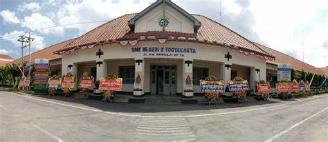

Profil Sekolah
Eks. Princess Juliana School (PJS) / STM 1 Yogyakarta — Sekolah teknik tertua dan paling bersejarah di Indonesia, membentuk tenaga profesional berkelas dunia selama lebih dari satu abad.
Nama Resmi
SMK Negeri 2 Yogyakarta
Nama Sejarah
STM 1 Yogyakarta / Princess Juliana School (PJS)
Didirikan
1919
Akreditasi
A
Sertifikasi
ISO 9001:2008 (TÜV Rheinland)
Luas Area
5,5 Hektar
Fondasi Pendidikan Kami
Visi
Menghasilkan Tamatan Yang Berkarakter, Unggul, Berwawasan Lingkungan, dan Berdaya Saing Global
Misi
- 1.Mengembangkan kurikulum pembelajaran berbasis Teaching Factory (TEFA)
- 2.Mengembangkan budaya literasi numerik, digital, finansial, sains, dan bahasa
- 3.Mengembangkan kompetensi peserta didik sesuai dengan bakat dan minat
- 4.Menyelenggarakan pembelajaran dan manajemen sekolah berbasis TIK
- 5.Meningkatkan fasilitas dan lingkungan belajar yang aman, nyaman, ramah lingkungan, ramah anak dan responsif gender
- 6.Menerapkan Perilaku Ramah Lingkungan Hidup (PRLH) menuju sekolah adiwiyata nasional
Sejarah Panjang Kami
Dari Princess Juliana School 1919 hingga menjadi SMK Negeri 2 Yogyakarta yang modern dan bertaraf internasional.
Didirikan sebagai Princess Juliana School (PJS) pada masa Hindia Belanda
Ijazah pertama Sekolah Teknik Menengah Yogyakarta dikeluarkan
Dipecah menjadi STM Negeri I (Bangunan & Kimia) dan STM Negeri II (Listrik & Mesin)
Semua STM di kompleks Jetis digabung menjadi STM Yogyakarta I
Resmi berubah nama menjadi SMK Negeri 2 Yogyakarta
Gedung ditetapkan sebagai Cagar Budaya oleh Menteri Kebudayaan dan Pariwisata
Meraih Sertifikat ISO 9001:2000 dari TÜV Rheinland, diserahkan oleh Mendikbud
Menjadi Sekolah Rujukan Nasional & Sekolah Berintegritas (poin 99,6)
9 Program Keahlian, 100+ mitra industri, lulusan tersebar di seluruh Indonesia
Lebih dari 105 Tahun Mencetak Profesional
Bergabunglah dengan sejarah panjang SMKN 2 Yogyakarta dan wujudkan cita-cita masa depanmu bersama kami.